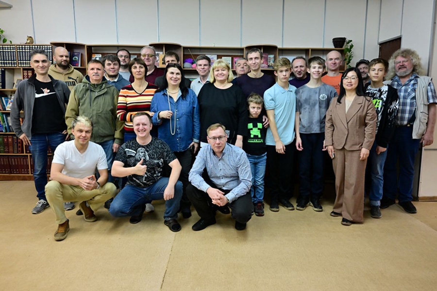
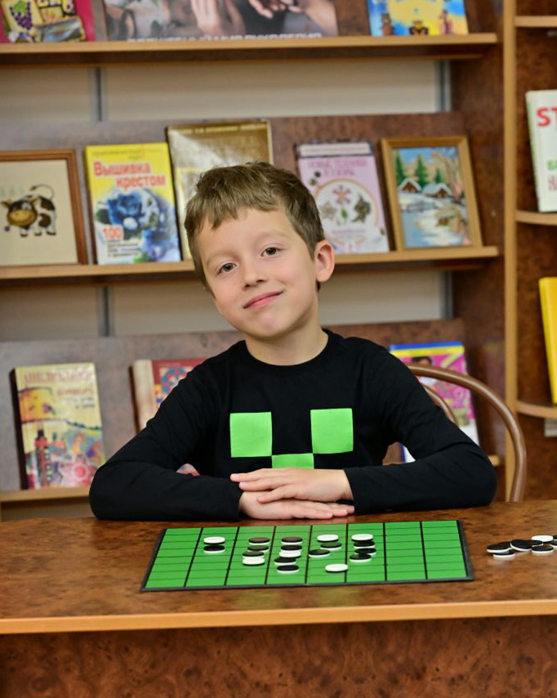
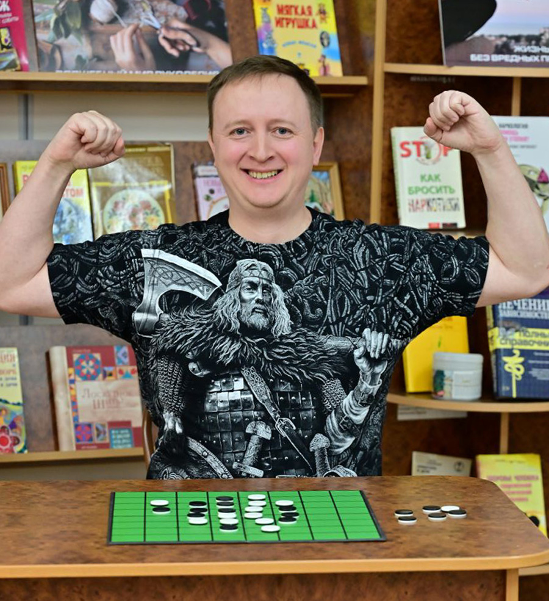

На турнире присутствовало 26 игроков. Из них семь дебютантов, но отнюдь не дилетантов.
Комментарии от Ивана Гуторова:
«Иван Шевченко — новый игрок в нашем сообществе. Показал очень высокий уровень игрового мышления, но пока не хватает дебютной подготовки.
Денис Дьяченко — известнейший в онлайн сообществе игрок, много лет играет на высоком уровне, но очно в турнире принял участие впервые. К сожалению, в турнирной сетке не пересеклись, было бы интересно сыграть.
Андрей Полторацкий — в давние времена играли онлайн на площадке Гамблер, теперь Андрей снова увлёкся реверси и пришёл в наше сообщество. В турнире не пересеклись.
Также следует отметить, что Андрей Комин принял участие в очном турнире впервые более чем за 10 лет, и показал высокий уровень игры. А Александр Подкопаев не играл в очных турнирах свыше 20 лет».
Один из ТОПов России готовился к Чемпионату мира и не смог приехать лично.
К онлайн-присутствию организаторами были предъявлены определённые требования. В частности, онлайн-показ помещения и экрана игрока, для исключения использования сторонних средств. Мы все знаем, что Александр не «читер» :-), но регламент для введения гибридного турнира в практику необходим.
Это стало хорошим подспорьем для подготовки нашей сборной.
На Чемпионат мира в Анкару в этом году поехали: Александр Мельников (Челябинск), Вячеслав Кобзев (Москва) и Андрей Перельман (Москва).
До этого детские турниры проводились только параллельно со взрослыми.

Свои первые шаги в соревнованиях делали: Максим Атаманов, Александр Хавров, Георгий и Роман Облецовы.
Вячеслав Кобзев запечатлел каждого участника турнира за доской, а также сделал общее фото участников, до того, как все после игры разбежались по домам. Благодаря ему мы сейчас имеем возможность видеть яркие живые фотоснимки наших игроков в этом материале.
Иван Гуторов выиграл 6 партий из 7-ми

«Я выбрал эти партии для разбора по нескольким причинам. Во-первых, возвращаться к своим партиям и анализировать свои ошибки - это хорошая практика для игрока. Во-вторых, далеко не всегда окончательный счет в игре отражает то преимущество, которое кто-то из игроков имел по ходу партии, напряженность при выборе хода в позиции и ответственность при принятии игрового решения. В третьих, отдельно выделю новый опыт игры онлайн в рамках очного турнира. Отмечу, что мне было сложнее играть партию с Александром Мельниковым, поскольку в игре онлайн для меня подсознательно присутствует некоторый эффект расслабленности. Привычка “блицора” - когда у тебя наиграно десятки тысяч партий в “минутку” игра онлайн воспринимается как что-то не очень значимое - всегда будет следующая партия. Я концентрировался и старался думать в игре с Александром, но все равно не сумел довести себя до той степени концентрации, которая присутствует за доской лицом к лицу с соперником»
Я играл чёрными. В дебюте получил небольшое преимущество, но потерял его одним ошибочным 29-м ходом. После серии ошибок в середине игры, я сделал страшный 39 ход F1, который должен был привести к крупному поражению. Далее на 44 ходу Илья должен был меня “закопать” окончательно ходом B2, но он сыграл более нейтральное F2. Испугался, что у меня есть обратный перехват диагонали. После последующего обмена ходами, к 50 ходу сложилась “ничейная” позиция, но Илья ходом С1 пошел в минимальный проигрыш. Дальше я уже просчитал позицию до конца и отыграл концовку. Окончательный счет 33:31. Отмечу высокий уровень игрового мышления Ильи. При накоплении опыта в очных турнирах будут призовые места и победы. Очень рад, что в прошлом году Илья присоединился к нашему сообществу игроков. Окончательный счёт 33:31.
Мои белые. Александр разыграл нестандартную версию дебюта: сделал девятый ход на D2. Дальше я постепенно наращивал преимущество, но на 38-м ходу ошибся - вместо гарантированно выигрышного хода пошел в меньший и более сложный выигрыш. При игре на доске элементарно не заметил, что у противника есть ход на С6. После этой ошибки я начал свое игровое преимущество терять. Несколькими ходами довел позицию сначала до “ничейной”, а потом и вовсе до проигрышной. Ключ к корректному розыгрышу концовки был в том, что черные угрожают отдать мне всю главную диагональ и тем самым обеспечить себе два хода на А8 и А7. Для отыгрыша этой цепочки 49-м ходом черным нужно было пойти на Н4. У меня остался бы один вынужденный ход на Е1. Дальше черные выиграли бы по количеству фишек. Мой оппонент мои ошибки не использовал. Результат 37:27.
К 35-му ходу у меня было хорошее дебютное преимущество. Как я его прозевал: мне в этой позиции показалось, что после хода на Е8 и ответа Андрея на G8, у меня есть следующий ход на С8. А его не было! После этой ошибки я растерялся, мое крупное позиционное преимущество ушло, и у Андрея появилась возможность для выигрыша - небольшая, но реальная. Я имел шанс проиграть. На 44-м ходу Андрей пошел в D1 - в минимальный проигрыш вместо выигрышного А4. Это очень сложно посчитать, не удивительно, что мой оппонент не использовал это преимущество. Мой ответ на 45-м ходу - G2 был единственных выигрышным ходом в этой позиции, и при этом не очевидным. Когда тебе угрожают взятием угла, рефлекторно рассматриваешь отражение этой угрозы немедленным реагированием на угрожающий ход. Я же в этой позиции сохранил угрозу взятия, но испортил ее, сделав сторону Н несбалансированной для противника. К 50 ходу белых сложилась такая позиция, что после взятия угла Н1 и моего ответа на Н2, при любом ходе белых я выигрывал два темпа внизу справа. Если оппонент берет угол А1, я играю G7. Если он не берет угол, то я становлюсь на Н8 и следующим же ходом играю на G7. Победа 44:20.
Небольшая моя ошибка в дебютной вариации на 14‑м ходу. Далее я был вынужден играть B7 ... А дальше была агония, Александр чётко и уверенно довёл партию до победы.
Смотрите результаты турнира и анализируйте партии на Flip the Disc
Итоги: одинаковое количество очков набрали Александр Мельников, Иван Гуторов и Дмитрий Атаманов. По дополнительным показателям победил Дмитрий Атаманов. Серебро — Иван Гуторов, бронза — Александр Мельников.
Дмитрию Атаманову удалось опровергнуть собственное высказывание о том, что организатор турнира сам турнир не выигрывает 🙂 Спасибо Диме за качественную подготовку и проведение Открытого первенства Москвы.